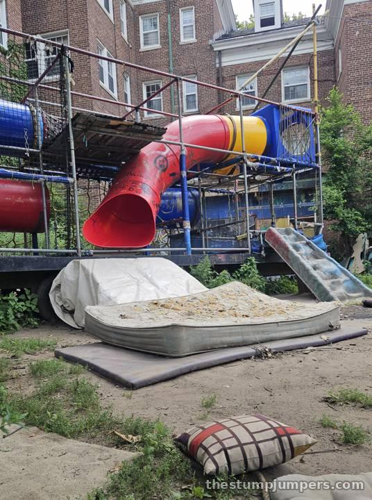
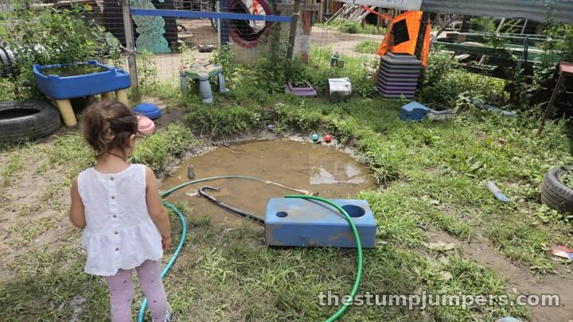
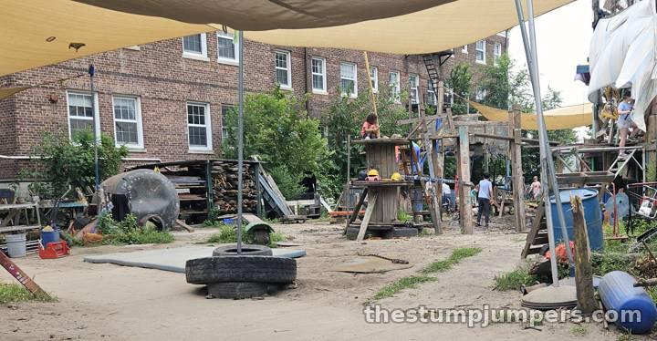
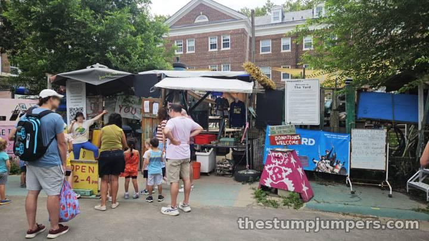
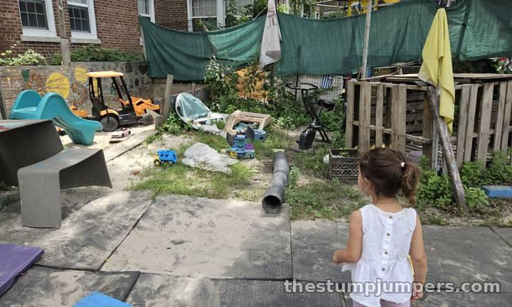

We found this one by accident, biking around Governors Island one weekend and wondering why a long line of families was queued outside a fence. On the other side was The Yard, run by a nonprofit called play:groundNYC, and it is certainly unique.

The best description I can offer: imagine some college kids went out on trash night, grabbed every old toy, plastic playset, tire, board, and pipe that looked fun, and dumped it all in a vacant city lot. Then imagine they handed that lot to children. That's roughly the idea, and it's a great one. It's an “adventure” or “junk” playground, where trained playworkers keep watch and kids climb, dig, and poke around in whatever happens to be lying there.

Logistics matter here. Everyone signs a waiver to get in. Parents wait outside the fence while chaperones keep an eye on things inside — which feels strange for about five minutes and wonderfully freeing after that. There's a little-kids zone and a big-kids area. We didn't qualify for the big-kids side, but I peeked through, and it looked way more fun. Admission is free; they ask for donations, and it's worth putting something in the jar.

Now the honest part: it is really scuzzy. Weeds, muddy puddles, and actual garbage are part of the experience. But isn't that exactly what was fun when you were a kid? My daughter, as it turns out, was kind of grossed out, and I still can't decide whether to be proud or disappointed.

Verdict: definitely worth the trip, unless you're afraid of grime, splinters, booboos, or things of that nature. Pack clothes you don't love and a sense of adventure.
By bike: that's how we found it. Ride the Hudson River Greenway to the Battery, roll onto the Governors Island ferry (bikes are welcome), and cruise the car-free island. On the run: the island's flat, car-free waterfront promenade makes a great loop before the gate opens. By train: 1 to South Ferry, R or W to Whitehall St, or 4/5 to Bowling Green, then walk to the ferry at the Battery Maritime Building. Ferries also leave from Pier 6 in Brooklyn Bridge Park.